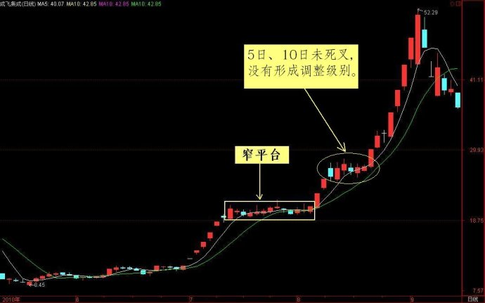
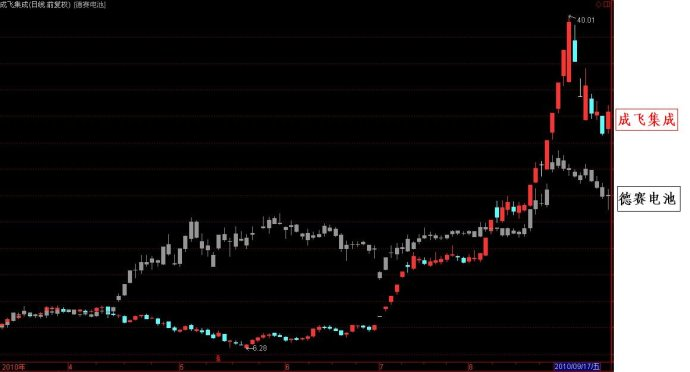
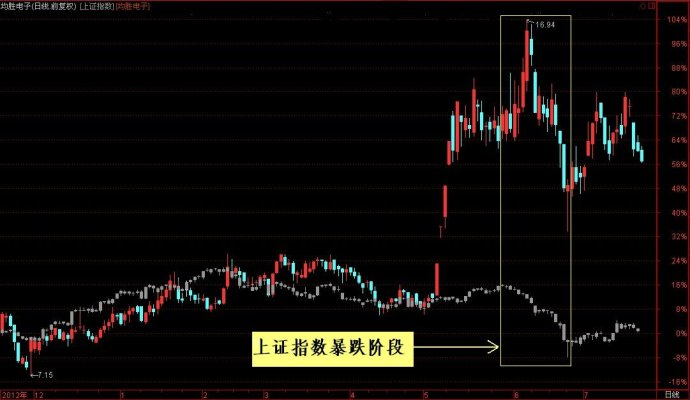

第370篇•价格走势的形态学与动力学（8）
谷为陵
我这两天很忙，没有及时更新博客，结果网友们的留言又是一大堆。这些网友们的留言，大多还是争论《缠论》的。从一些批评我的网友们的留言来看，这些网友似乎是误解了我对于的《缠论》的本意，结果也引发了我的一些粉丝与缠迷们的论战。其实，这大可不必。为此，现在我特申明两点：一是我没有否定《缠论》的意思，二是我没有与李彪比高低的意思。
关于第一点，我的态度很明确，我的主升浪战法的理论出发点与《缠论》是不同的，我认为两者不具备可比性。两者的不同点主要有三：
其一，理论基础与研究对象不同。《缠论》是从数学原理与市场本质来研究价格的变化趋势与规律，《缠论》可以包含所有的股票，而我的主升浪战法是从股票整体价值论出发，研究强势股的特征与价格变化规律，我只针对强势股。
其二，研究工具不同。《缠论》是以严密的数学假设和推导作为研究手段，而我的主升浪战法是以实证分析方法为研究手段。
其三，实现目的之手段不同。《缠论》的最终目的，是通过解释价格和预测价格而发现和把握投资机会，而主升浪战法的最终目的通过发现强势股的价格运动的再现性规律，以把握其中可能出现的重大的可重复性机会。
针对以上的三点，我现在的体会是，絮我直言，我还没有能够将《缠论》与我的主升浪战法很好地结合在一起，但这并不意味着我在否认《缠论》的有效性，或许正如某些网友所言，我对于《缠论》的理解还不深入呢。假若某些《缠论》高手能够将我的主升浪战法与《缠论》很好地结合在一起，那么，我会虚心向您学习的。
关于第二点，我从来没有说过我与李彪相比，操盘水平怎么样的问题，但我说过，李彪曾经教过我很多宝贵的经验，这些经验是通过其它途径不可能学到的，至今我还心存感激。且不论《缠论》到底是达到了多高的高度，但李彪当年的操盘水平属于顶尖高手之列，应该是没有什么问题的。但至于有的网友问，李彪操盘水平是否是全国前两名，我可不敢说。不同的机构、不同的资金性质，玩法不一样，你怎样比较呢？若你非要比较林园和李彪的水平谁高，那就如非要比较巴菲特与索罗斯谁的投资水平高一样，这是无解的。我要说，A股市场虽然只有20年的历史，但其中的高手如云，且新秀辈出，没有敢说自己就是中国的第几第几，这样说也毫无意义。真正的高手，是不留恋过去的荣光的，他们总是面向未来的，且能够打败他们的，只有他们自己。所以，我要说，李彪曾经当过我的老师，也永远是我的老师。至于我对于他的《缠论》的一些不同看法，我想他应该是理解的，一个人若连不同的意见都听不进去，那他也不会达到那样的高度。
好了，我接着讲价格走势的形态学与动力学的问题。我在上篇博文中，举了三个“窄平台”的形态学案例，借着这三个案例，我正好可以接着阐述其动力学问题。
在“窄平台”出现后，价格最终能够选择的突破方向只有两种：一是向上突破，形成先的上涨行情甚至是新的主升浪；二是向下突破，形成新的下跌趋势甚至是新的主跌浪。那么，造成这种向上或者向下突破的原因是什么，或者说，突破的动力是什么？根据我的主升浪战法的原理，我认为，造成突破的动力就来自于那“五面”顺势与逆市关系。我还是用上次的那三个案例还加以说明。
案例1：成飞集成的向上突破。
2010年7月6日至9月9日，成飞集成股价从8元多暴涨到52元，其上涨的动力是什么呢？该股直接暴涨的原因是34亿元中航锂电资产的注入，这导致该股从8元暴涨了将近6个涨停板，股价从8元多涨到20元，并且在20元形成了一个“窄平台”。这个“窄平台”，就是其第一波主升浪结束后的调整阶段。
有个“以缠破缠”网友给我留言：“您的描述中最大的问题就是，这些走势类型不分级别，只用窄与宽对盘整定义，那多窄算是窄呢？我们看到成飞集成盘整上方依然有一个小盘整，若无精确定义，它也是盘整。请指教。”我说过，主升浪是分级别的，调整也是分级别的，短期主升浪结束的标志就是5日与10日形成高位死叉。没有死叉，则短期主升浪没有结束，形成死叉，则短期主升浪结束，且调整开始。大家可以看一下，成飞集成的那个“窄平台”上方的“小盘整”，是属于该股第二波主升浪之中的，因为在此平台时，5日与10日还没有形成高位死叉，这说明其第二波主升浪还未结束，还在进行，所以，这个“小盘整”不能算是真正的调整。如下图所示：

那么，成飞集成在20元附近形成“窄平台”后，股价最终向上大幅突破的动力是什么呢？我看了大家的留言，有人将该股的突破与中小板当时的上涨行情联系了起来，这是很好的联想，也是其上涨原因之一，但还不是最主要的原因。我认为，该股向上突破的最重要的原因，是因为比价关系。大家当时注意到一只股票没有，那就是德赛电池。该股自2010年2月至5月底，股价逆势上涨，从9元暴涨到27元，成为当时市场涨幅最大的黑马。德赛电池炒的题材就是新能源汽车题材，但实际上，德赛电池还不是纯正的锂电池概念。当成飞集成在7月6日公告拟注入34亿元中航锂电资产的时候，这个巨大的资产标的应该是当时市场上最大的锂电池题材，而当时成飞集成的股价才8元多。好了，一个非正宗的锂电池概念股的股价能够炒到27元，而最正宗的锂电池概念股的股价才8元多，你说成飞集成的股价要涨到哪里才算合理？是不是应该先超过德赛电池再说呀？这就是正常的市场逻辑，由此也就形成了强烈的比价关系。于是，成飞集成的股价就出现了连续的6个涨停板，股价直涨到20元才歇气。但我说过，20元不是成飞集成的最终归宿，按照比价关系，它的股价一定要超过德赛电池的股价，于是，我们看到，成飞集成的股价在20元的高位买盘极其踊跃，股价根本调不下去，于是，不得不形成一个“窄平台”。但这个“窄平台”是不稳定的，因强烈的比价关系的作用，最终该股很快突破了这个“窄平台”，形成了新的一轮主升浪。这就是成飞集成的“窄平台”突破的动力学，它是“五面顺势”的集中体现。有意思的是，当成飞集成突破“窄平台”展开第二波主升浪后成，德赛电池又跟着成飞集成上涨了40%，这进一步证明这两支股票的走势具有很高的相关性。成飞集成与德赛电池当时的股价叠加图如下所示：

案例2：均胜电子的向上假突破。
均胜电子因去年以24亿元人民币收购德国普瑞后，成为了全球三大汽车用锂电池系统管理高端生产商，该股因美国“特斯拉旋风”而暴涨4个涨停板，其后在5月13日至6月4日做了一个“窄平台”。这个“窄平台”的形态是非常强势与规整的，期间每日的换手率也很高，日均换手率达到了13%。依照该股的热门概念、14元的不算高的股价、旺盛的买气，应该可以预料该股向上突破的概率很高。果然，该股在6月5日开始向上突破，但突破向上仅仅维持了2个交易日，随后股价就大幅下跌。这是为何呢？这是因为，自6月3日开始，上证指数就开始了一轮大跌趋势，至6月13日，下跌开始加速，而均胜电子的向上突破，恰恰是在上证指数已经开始向下突破的时候，这属于逆势而动。所以，从大盘面来看，该股没有得到大盘面的支持。另外，该股的基本面也是有一些不足的，最重要的是，该股还没有现实的业绩，也暂时看不出该股会在汽车锂电池管理系统方面拥有怎样的市场开拓计划，怎样的收益实现计划等，该股的炒作还停留在概念层面，对于股价的实质性支撑不强。以下是该股与上证指数的叠加走势图：

案例3：内蒙君正的未来走势分析。
对于内蒙君正的未来走势，该股在此“窄平台”后的方向选择问题，我是这样看的：其一，从走势看，该股很强，“窄平台”上总是阳线放量，阴线缩量，且每天的成交量很大，这说明主动性攻击盘很强，买气相当旺盛，这样旺盛的买气，往往预示着股价有大概率的向上突破的能力。其二，假若同板块龙头股东方财富能够继续大涨，那么，该股向上突破的概率将会大增。但是，即使该股选择了向上突破，我认为，该股的股价也不会马上形成第二波股价翻番的主升浪，因为该股的基本价值不支持这样大的涨幅，我认为，该股充其量会上涨到13～15元（第一稿为12～14元，但因其“窄平台”上轨的上影线在11.77元，故特此向上小幅修正），就难以再有继续大涨的基本面动力了。其三，假若东方财富不再上涨，且大盘继续下跌，那么，也不排除该股会选择向下突破。
所以，“窄平台”选择向上突破或者向下突破，从动力学上看，应该是“五面”综合作用的结果。其中，基本面的题材、大盘的走势、市场面的比价关系、技术面的“窄平台”的量价关系、股性面的流通盘大小等，都对于“窄平台”的突破方向的选择具有直接的影响，只不过这几种因素的影响权重不同罢了。